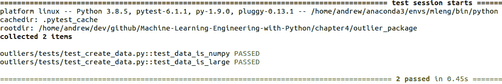

第四章:包装完毕
在前面的章节中，我们介绍了很多你需要用来成功构建工作的机器学习 ( ML )产品的工具和技术。我们还介绍了许多示例代码，帮助我们理解如何实现这些工具和技术。到目前为止，这都是关于我们需要什么编程，但是这一章将集中在如何编程。特别是，我们将介绍和使用在更广泛的 Python 软件开发社区中流行的许多技术、方法和标准，并将它们应用到 ML 用例中。对话将围绕开发用户定义的库和包的概念展开，这些可重用的代码片段可用于部署您的 ML 解决方案或开发新的解决方案。值得注意的是，我们在这里讨论的所有内容都可以应用于 ML 项目开发生命周期中的所有 Python 开发活动。如果您正在笔记本中进行一些探索性的数据分析，或者为项目的研究部分编写一些建模脚本，您的工作仍然会从我们即将介绍的概念中受益匪浅。
在本章中，我们将回顾 Python 编程的一些基本要点，然后讨论编码标准的概念和编写高质量 Python 代码的一些要点。我们还将触及 Python 中面向对象编程和函数式编程之间的区别，以及它与您可能想在解决方案中使用的其他工具的优势和协同点。我们将讨论一些编写自己的 ML 包的好用例，并讨论打包的选项。接下来将讨论代码中的测试、日志记录和错误处理，这些都是构建可信任的代码的重要概念，不仅可以运行，还可以在不运行时进行诊断。接下来将深入探讨我们的产品包的逻辑流程。最后，我们将探索如何确保我们不会重新发明轮子和使用其他地方已经存在的功能。
在本章中，我们将讨论以下主题:
- 写好 Python
- 选择一种风格
- 打包您的代码
- 构建您的包
- 测试、日志记录和错误处理
- Not reinventing the wheel
重要说明
在 Python 中，包和库之间没有明确的区别。普遍的共识似乎是，库通常指的是你想在其他项目中重用的任何代码集合，而包指的是 Python 模块的集合(在本章中讨论)。我们在这里经常互换使用这两个词，因为我们知道当我们说库的时候，我们通常指的是一堆整齐地放在一起并且包含至少一个包的代码。这意味着，对于我们这里的目的，我们不会将包含一些代码的单个脚本作为库重用。
谁不想编写更健壮、干净、可读、可测试和高性能的代码，供我们的同事、ML 社区甚至我们的客户使用呢？我们开始吧！
技术要求
为了运行本章中的示例，您需要确保已经安装了:
- sci kit-学习
- Unix make(P 代码)实用程序
写好 Python
正如本书中所讨论的，Python 是一种非常流行和非常通用的编程语言。一些世界上最广泛使用的软件产品，以及一些世界上最广泛使用的 ML 工程解决方案，都使用 Python 作为核心语言。鉴于这种范围和规模，很明显，如果我们要编写类似的令人惊叹的 ML 驱动软件，我们应该再次遵循这些解决方案已经采用的最佳实践和标准。在接下来的部分中，我们将探索打包在实践中意味着什么，并开始在质量和一致性方面真正提升我们的 ML 代码。
概述基础知识
在我们陷入一些更高级的概念之前，让我们确保我们都在同一页上，并回顾一下 Python 世界的一些基本术语。这将确保我们将正确的思维过程应用到正确的事情上，并且我们在编写代码时可以感到自信。
在 Python 中，我们有以下对象:
- 变量:存储各种类型数据的对象。在 Python 中，变量可以通过赋值来创建而不需要指定类型，例如:
numerical_variable = 10 string_variable = 'string goes here'
defkeyword in Python and can return any Python object. Functions are first-class citizens in Python, which means you can reference them using their object name (and re-reference them) and that functions can pass and return functions. So, for example, if we create a function that calculates some simple statistics from a pandas DataFrame, we can do the following. First, define it:def calculate_statistics(df): return df.describe()然后使用原来的名称和一个名为
X_train的数据帧运行它:calculate_statistics(X_train)
然后，您可以使用新名称重新分配该函数，并以类似方式调用它:
new_statistics_calculator = calculate_statistics new_statistics_calculator(X_train)
然后你可以传递更多的函数。例如，如果您将函数传递给一个新函数，该函数接受结果并返回一个 JSON 对象，那么您可以调用它！
def make_func_result_json(func ,df): return func(df).to_json make_func_result_json(calculate_statistics, X_train)这有助于将一些简单的代码快速构建成相对复杂的东西。
module.py，我们可以在另一个 Python 程序(或 Python 解释器)中键入以下内容，以便使用其中包含的功能:import module module.calculate_statistics(df) module.make_func_result_json(module.calcualate_statistics, df)
- 类:我们将在面向对象编程部分详细讨论类，但是现在只知道这些是面向对象编程的基本单元，并且作为一种包含逻辑相关功能的好方法。
dotsyntax. For example, if we have a package calledfeaturethat contains modules for helping us to do feature engineering, it could be organized as follows:feature/ |-- numerical/ |-- analyze.py |-- aggregate.py |-- transform.py |-- categorical/ |-- analyze.py |-- aggregate.py |-- transform.py然后，如果我们想要使用包含在数字或分类子模块中的功能，我们可以像这样使用
dot语法:import feature.categorical.analyze import feature.numerical.transform
现在让我们继续讨论一些通用的 Python 技巧和诀窍。
提示和技巧
现在让我们来讨论一些使用 Python 的技巧和诀窍，这些技巧和诀窍经常会被忽略，即使是那些非常熟悉这种语言的人也不例外。以下概念可以帮助你编写更紧凑和更高性能的代码，所以最好把它们放在手边。请注意，这个列表绝对不是详尽的:
yieldstatement. For example, here we can define a generator that will filter a given list of values based on a predicate calledcondition:def filter_data(data, condition): for x in data: if condition(x): yield x实际上，我们可以将它应用到一个简单的名为
data_vals的从 0 到 99 的整数列表中，并过滤掉低于某个阈值的值:for x in filter_data(data_vals, lambda x: x > 50): print(x)
这将返回从 50 到 99 的整数。
定义生成器表达式的另一种方式是使用圆括号中的迭代语句。例如，在这里我们可以定义一个生成器，它从 0 到 9 对方块进行迭代:
gen1 = (x**2 for x in range(10)) for i in gen1: print(i)
请注意，您只能执行一次生成器；之后就是空了。这是因为对于迭代的每一步，他们只在内存中存储他们需要的东西，所以一旦迭代完成，什么也不存储！
生成器是创建数据操作步骤的非常强大的方法，这些步骤是内存高效的，并且可以用于在诸如 Apache Beam 这样的框架中定义定制管道。我们不会在这里讨论这个问题，但它绝对值得一试。作为一个例子，看一下位于https://medium . com/analytics-vid hya/building-a-data-pipeline-with-python-generators-a 80 a4 d 19019 e的文章。
- 列表理解:这是一种语法，它允许我们获取任何我们必须掌握的可迭代对象(字典、列表、元组和字符串都是例子)并以极其紧凑的方式构建一个列表。这可以让你避免编写冗长而笨拙的循环，并有助于创建一些更优雅的代码。列表理解在内存中创建整个列表，因此它们不如生成器有效。所以明智地使用它们，如果可以的话，只创建小列表。与生成器的圆括号相反，通过在方括号中编写迭代逻辑来执行列表理解。例如，我们可以创建第一个生成器示例中使用的数据:
data_vals = [x for x in range(100)]
- 容器和集合 : Python 有一组有用的内置类型，称为容器，它们是 dict、set、list 和 tuple。Python 初学者从他们第一次使用这种语言时就学会了如何使用这些，但是我们经常忘记的是它们的扩充版本:集合。这些允许在标准容器之上有额外的行为，这是有用的。图 4.1 中的表格总结了在https://docs.python.org/3/library/collections.html的python.org上 Python 3 文档中提到的一些有用的容器。当您处理一些数据操作时，这些是非常有用的，通常可以为您节省几行代码:

图 4.1–Python 3 中集合模块的一些有用类型
*argsand**kwargs: When we want to call a function in Python, we often supply it with arguments. We have seen plenty of examples of this in this book already. But what happens if you define a function for which you would like to apply to a varying number of arguments? This is where the*argsand**kwargspatterns come in. For example, imagine we want to initialize a class calledAddressthat uses information gathered from an online web form to create a single string giving an address. We may not know how many elements are going to be in each text box used by the user for the address ahead of time. We could then use the*argspattern (you don't have to call itargs, so here we've called itaddress). Here's the class:class Address(object): def __init__(self, *address): if not address: self.address = None print('No address given') else: self.address = ' '.join(str(x) for x in address)那么在这两种情况下，您的代码都将工作得非常好，即使构造函数的参数数量是可变的:
address1 = Address('62', 'Lochview', 'Crescent') address2 = Address('The Palm', '1283', 'Royston', 'Road')然后
address1.address由'62 Lochview Crescent'给出，address2.address由'The Palm 1283 Royston Road'给出。**kwargs扩展了这个想法，允许可变数量的关键字参数。如果您的函数可能想要定义可变数量的参数，但您需要将名称附加到这些参数上，这将特别有用。例如，我们可能希望定义一个包含 ML 模型超参数值的类，其数量和名称将因算法而异。因此，我们可以做如下事情:class ModelHyperparameters(object): def __init__(self, **hyperparams): if not hyperparams: self.hyperparams = None else: self.hyperparams = hyperparams然后，代码将允许我们定义如下实例:
hyp1 = ModelHyperparameters(eps=3, distance='euclidean') hyp2 = ModelHyperparameters(n_clusters=4, max_iter=100)
然后由
{'eps': 3, 'distance': 'euclidean'}给出hyp1.hyperparams，由{'n_clusters': 4, 'max_iter': 100}给出hyp2.hyperparams。
现在，我们将考虑如何定义和组织这些元素，以使您的代码可读和一致。
坚持标准
当你说像坚持标准、这样的话时，在大多数情况下，你可能会被原谅，因为你半信半疑地期待着与你交谈的任何人的一声叹息和一个巨大的白眼。标准听起来枯燥乏味，但事实上，它们是确保您的工作具有一致性和高质量的极其重要的一部分。
在 Python 中，编码风格的事实上的标准是 Python 增强提案 8 ( PEP-8 )，作者是圭多·范·罗森(Python 的创造者)、巴里·华沙(Barry Warsaw)和尼克·科格兰(https://www.python.org/dev/peps/pep-0008/)。它本质上是一个指南、提示、技巧和建议的集合，用于使代码具有一致性和可读性。在 Python 项目中遵循 PEP-8 风格指南的一些好处如下:
- 更高的一致性:这将有助于你编写出一旦部署就不太可能崩溃的代码，因为跟踪你的程序流程并识别错误和缺陷要容易得多。一致性还有助于简化代码的扩展和接口的设计。
- 可读性提高:这带来了效率，因为同事甚至你的解决方案的用户可以理解正在做什么以及如何更有效地使用它。
那么，PEP-8 风格指南里有什么呢？你应该如何考虑将它应用到你的 ML 项目中？要了解完整的细节，我建议您阅读前面给出的 PEP-8 文档。但是在接下来的几段中，我们将深入一些细节，这些细节将会以最少的努力给你的代码带来最大的改进。
首先，让我们来看看的命名惯例。当你写一段代码时，你必须创建几个变量、文件和其他对象，比如类，这些都必须有一个名字。确保这些名字的可读性和一致性是让你的代码达到很高标准的第一步。
PEP-8 中的一些关键指针如下:
Makemydata():def Makemydata(): # steps go here … return result将您的函数命名为
Makemydata()并不是一个好主意，而将其命名为类似于transform_features的名称会更好:def transform_features() # steps go here … return result该函数名称符合 PEP-8。
pandas、numpy和scipy。Scikit-learn 看起来似乎打破了这个规则，但实际上并没有，因为包名是sklearn。样式指南提到模块可以有下划线来提高可读性，但是包不应该。如果我们在一个封装中有一个模块叫做transform_helpers，那么这是可以接受的，但是一个完整的封装叫做marketing_outlier_detection就太糟糕了！OutlierDetector、Transformer或PipelineGenerator，它们清楚地说明了它们的用途，并且也遵循上驼色或 PascalCase(两者意思相同)样式。
这些是您应该知道的一些最常用的命名约定。PEP-8 文档还包含了很多关于空白和行格式的优点，我们在这里就不赘述了。我们将通过讨论 PEP-8 的编程建议中作者最喜欢的一些建议来结束这一部分。这些经常被忽视，如果忘记了，可能会导致一些代码读起来很糟糕，很可能会崩溃，所以要小心！
在所有这些关于风格的讨论中需要记住的一点是，在 PEP-8 文档的顶部，它指出愚蠢的一致性是心胸狭窄的妖怪，并且在某些情况下有充分的理由忽略这些风格建议。再次，阅读 PEP-8 文档以获得完整的作品，但是如果你遵循这些要点，那么，一般来说，你将编写干净和可读的代码。
接下来，我们将讨论当我们使用 Python API for Apache Spark 时，这些规则是如何不适用的。
写好 PySpark
在本节中，我们将关注 Python 的一个特殊风格，它在数据科学和 ML 领域非常重要。PySpark 代码已经在本书的示例中使用，因为它是分布数据工作负载的首选工具，包括 ML 模型。在 第六章 、放大中，我们将了解更多关于 PySpark 的内容，但这里我们将只简单提及一些关于编码风格的要点。
正如在第三章 、从模型到模型工厂中的 Spark ML 管道一节中提到的，由于 Spark 是用 Scala 编写的，PySpark 的语法(它只是 Spark 的 Python API)继承了该底层语言的许多语法风格。这意味着在实践中，您使用的许多方法都将在 CamelCase 中编写，这意味着使用 CamelCase 定义变量也是有意义的，而不是使用下划线分隔的单词的标准 Python PEP-8 命名约定。这是我们应该鼓励的行为，因为它有助于人们阅读我们的代码，清楚地看到哪些部分是 PySpark 代码，哪些是(更)普通的 Python 代码。为了强调这一点，当我们之前使用来自pyspark.ml包的StringIndexer对象时，我们使用了StringIndexer而不是更惯用的 Python，string_indexer:
from pyspark.ml.feature import StringIndexer
stringIndexer = StringIndexer(inputCol=categoricalCol,
outputCol=categoricalCol)
关于 PySpark 代码的另一个要点是，因为 Spark 是用函数范式编写的，所以您的代码也遵循这种风格也是有意义的。在下一节中，我们将更多地了解这意味着什么。
选择风格
本节将总结两种编码风格或范例，它们利用了 Python 不同的组织原则和能力。不管你是用面向对象的风格还是函数式风格来编写代码，这可能只是一种审美选择。然而，这种选择也可以提供其他好处，例如与您的问题的逻辑元素更一致的代码，更容易理解的代码，甚至更高性能的代码。
在接下来的部分中，我们将概述每个范例的主要原则，并允许您根据自己的用例进行选择。
面向对象编程
面向对象编程 ( OOP )是一种风格，其中代码是围绕着(你猜对了)具有相关属性和数据的抽象对象来组织的，而不是围绕着你的解决方案的逻辑流程。OOP 这个主题值一本书(或者几本书！)本身，因此我们将重点关注与我们的 ML 工程之旅相关的关键点。
首先，在 OOP 中，你必须定义你的objects。这是在 Python 中通过类的核心 OOP 原则完成的，类是程序中结构的定义，将相关的数据和逻辑元素放在一起。类是面向对象程序设计中定义对象的模板。例如，考虑一个非常简单的类，它将一些计算数据集上数值异常值的方法组合在一起。例如，如果我们考虑我们在 第 3 章中研究的从模型到模型工厂的管道，我们可能希望有一些东西使其更容易应用于生产环境。因此，我们可能希望将 scikit-learn 等工具提供的一些功能打包到一个自己的类中，该类可以针对我们的问题定制特定的步骤。在最简单的情况下，如果我们想要一个类来包装我们的数据的标准化，然后应用一个通用的异常值检测模型，它可能看起来像这样:
class OutlierDetector(object):
def __init__(self, model=None):
if model is not None:
self.model = model
self.pipeline = make_pipeline(StandardScaler(), self.model)
def detect(self, data):
return self.pipeline.fit(data).predict(data)
这个例子所做的就是允许用户跳过一些步骤，否则他们可能不得不写一些来完成工作。代码不会消失，它只是被放在一个具有清晰逻辑定义的方便的对象中。在这种情况下，显示的管道非常简单，但是我们可以想象将它扩展到非常复杂的东西，并且包含特定于我们用例的逻辑。因此，如果我们已经定义了一个异常值检测模型(或从模型存储中检索，如 MLFlow，如第 3 章，从模型到模型工厂中所讨论的)，那么我们可以将它输入到该类中，并仅使用一行代码运行非常复杂的管道，而不管该类中包含的复杂性如何:
model = IsolationForest(behaviour='new',
contamination=outliers_fraction,
random_state=42)
detector = OutlierDetector(model=model)
result = detector.detect(data)
正如您从示例中看到的，这种实现模式似乎很熟悉，这是因为它应该如此！Scikit-learn 中有很多 OOP，每次创建模型时都会用到这个范例。创建模型的行为就是你实例化一个类对象的例子，你对数据调用fit或predict的过程就是调用类方法的例子。所以，前面的代码看起来不奇怪的原因是它不应该如此！如果我们用 scikit-learn 做过任何 ML，我们已经在使用 OOP 了。
尽管我们刚刚说过，使用对象和理解如何构建它们显然是两个不同的挑战。所以，让我们回顾一下构建自己的类的核心概念。这将为我们以后构建更多与我们自己的 ML 解决方案相关的类做好准备。
首先，从前面的代码片段中可以看到，一个类是用关键字class定义的，PEP-8 约定是使用大写字母作为类名。让你的类名成为事物的清晰定义也是一个很好的实践。例如，OutlierDetector、ModelWrapper和DataTransformer是好的类名，而Outliers或Calculation则不是。您还会注意到，我们在类名后面有一些括号。这告诉类从哪个对象继承功能。在前面的例子中，我们可以看到这个类继承了一个叫做object的东西。这实际上是 Python 中的内置基类，所有其他对象都从这个基类继承了。因此，由于我们定义的类没有继承比object更复杂的东西，你可以认为这实际上是在说我们将要构建的类将拥有它需要的所有功能；我们不需要为这个类使用其他对象中已经定义的更复杂的功能。显示从object继承的语法实际上是多余的，因为您可以省略括号并编写OutlierDetector，但是将继承显式化是一个很好的实践。
接下来，你可以看到我们想要组合在一起的功能是在类内部定义的。存在于类中的函数叫做OutlierDetector，只有一个叫做detect的方法，但是你的类可以有多少个方法并没有限制。方法包含类与数据和其他对象交互的能力，所以它们的定义是构建类的大部分工作所在。
你可能认为我们遗漏了一个方法，叫做__init__()。这实际上不是一个方法(或者你可以认为它是一个非常特殊的方法)，它被称为构造函数。构造函数做它所说的——它构造！它的工作是当类被初始化为对象时，为类执行所有相关的设置任务(有些任务在后台执行，比如内存分配)。当示例定义了detector时，调用构造函数。如你所见，你可以传递变量，然后这些变量可以在类中使用。Python 中的类可以在不定义显式构造函数的情况下创建，但会在后台创建一个。关于构造函数，我们要指出的最后一点是，除了None之外，它们不允许返回任何东西，所以不写return语句是很常见的。
您还会在示例中看到，类中有变量，并且有一个有点神秘的关键字self。这允许类中的方法和操作引用该类的特定实例。因此，如果您定义了两个或一百个OutlierDetector对象的实例，它们的内部属性可能会有不同的值，但仍然具有相同的功能。
稍后，我们将为您的 ML 解决方案创建一些更复杂的 OOP 风格，但是现在，让我们讨论一下我们可能想要使用的另一种编程范式——函数式编程。
功能编程
return你写的函数语句。
它使用了你的程序中的数据不允许被改变的思想。这个概念被称为不变性。如果您的数据(或任何对象)是不可变的，这意味着没有内部状态可以修改，如果您想对数据做些什么，您实际上必须创建新数据。例如，在关于面向对象编程的章节中，我们再次回顾了标准化数据的概念。在函数式程序中，标准化数据不能覆盖非标准化数据；您需要将这些新数据存储在某个地方，例如，在同一数据结构的新列中。
一些编程语言是以函数原则为核心设计的，比如 F#和 Haskell，但 Python 是一种通用语言，可以很好地适应这两种范式。
您可能会在其他 Python 代码中看到一些其他函数式编程概念。例如，如果您曾经使用过 lambda 函数，那么这可能是函数式编程代码的一个强大方面，因为这是您定义匿名函数(没有指定名称的函数)的方式。所以，你可能见过类似这样的代码:
df['data_squared'] = df['data'].apply(lambda x: x**2)
在前面的代码块中，df是一个熊猫数据帧，data只是一列数字。这是帮助简化 Python 函数式编程的工具之一。其他这样的工具是内置函数map()、reduce()和filter()。
例如，假设我们有一些类似于概述基础知识部分的地址数据，在那里我们讨论了args和**kwargs的概念:
data = [ ['The', 'Business', 'Centre', '15', 'Stevenson', 'Lane'], ['6', 'Mossvale', 'Road'], ['Studio', '7', 'Tottenham', 'Court', 'Road'] ]
现在，我们可能想要编写一些代码来返回与该数据具有相同形状的列表，但是每个条目现在都包含每个字符串中的字符数。这可能是我们 ML 管道中的一个数据准备步骤中的一个阶段。如果我们想编写一些代码来实现这一功能，我们可以定义一个函数，它接受一个列表并返回一个新列表，其中包含条目的字符串长度，如下所示:
def len_strings_in_list(data_list): return list(map(lambda x: len(x), data_list))
这体现了函数式编程，因为数据是不可变的(内部状态没有变化)，函数是纯函数(只使用函数范围内的数据)。然后，我们可以使用函数式编程中的另一个概念，称为高阶函数，其中您提供函数作为其他函数的参数。例如，我们可能希望定义一个函数，它可以应用任何基于列表的函数，但只能应用于列表列表:
def list_of_list_func_results(list_func, list_of_lists): return list(map(lambda x: list_func(x), list_of_lists))
请注意，这是完全通用的；只要list_func()可以应用于一个列表，它就可以作用于一个列表列表。因此，我们可以通过调用以下代码来获得我们想要的原始结果:
list_of_list_func_results(len_strings_in_list, data)
这将返回期望的结果:
[[3, 8, 6, 2, 9, 4], [1, 8, 4], [6, 1, 9, 5, 4]]
Spark 是本书中已经多次使用的工具，它是用 Scala 语言编写的，Scala 语言也是通用的，可以适应面向对象和函数式编程。Spark 主要以函数式风格编写；如果不变性等原则得到尊重，它的分布式计算的目标就更容易实现。这意味着当我们通过这本书输入 PySpark 代码时，我们已经微妙地学会了一些函数式编程实践(你注意到了吗？).
事实上，在 第 3 章 ，从模型到模型工厂中，我们构建的示例 PySpark 管道有这样的代码:
data = data.withColumn('label', f.when((f.col("y") == "yes"), 1).otherwise(0))
这是功能性的，因为我们创建的data对象实际上是一个添加了新列的新数据帧——我们不能只在适当的位置添加一列。还有一些代码构成了 Spark MLlib 库管道的一部分:
scaler = StandardScaler(inputCol='numerical_cols_imputed', outputCol="numerical_cols_imputed_scaled")
这定义了如何获取数据帧中的一系列列，并对它们执行缩放转换。注意你如何定义输入列和输出列，并且它们不能是同一个。这就是不变性——您必须创建新数据，而不是就地转换它。
希望这能让您体验一下 Python 中的函数式编程。这不是我们将在本书中使用的主要范例，但它将用于一些代码片段，尤其是，请记住，当我们使用 PySpark 时，我们通常是在隐式地使用函数式编程。
我们现在将讨论打包您编写的代码的方法。
打包您的代码
从某些方面来说，Python 风靡全球很有意思。它是动态类型的和非编译的，因此与 Java 或 C++相比，它的工作方式可能非常不同。当我们考虑打包我们的 Python 解决方案时，这一点尤其突出。对于编译语言来说，主要目标是产生一个可以在所选环境中运行的编译工件，例如 Javajar。Python 要求您运行的环境具有合适的 Python 解释器，并且能够安装您需要的库和包。也没有创建单个编译的工件，所以您通常需要按原样部署整个代码库。
尽管如此，Python 确实风靡了世界，尤其是对于 ML。作为考虑将模型投入生产的 ML 工程师，如果我们不理解如何打包和共享 Python 代码，以帮助他人避免重复，信任解决方案，并能够轻松地将其与其他项目集成，那将是失职。
在接下来的几节中，我们将首先讨论什么是用户定义的库，以及用这种方式打包代码的一些优点。然后，我们将定义您可以做到这一点的主要方法，以便您可以在生产中运行您的 ML 代码。
为什么包？
在我们详细讨论Python 中的包或库到底是什么之前，我们可以通过使用的工作定义来阐明其优势，这是一组 Python 代码，无需详细了解其实现即可运行。
你已经从这个定义中了解了这么做的第一个原因的本质:抽象。
将您的代码整合到一个库或包中，以便您的团队、组织或更广泛的社区中的其他开发人员和数据科学家可以重用，这使得这些用户组能够更快地解决问题。由于工作的细节被抽象掉了，任何使用你的代码的人都可以专注于实现你的解决方案的功能，而不是试图理解和剖析每一行。这将导致项目中开发和部署时间的减少，并且首先鼓励代码的使用！
第二个优势是通过将您需要的功能整合到一个库或包中；你将所有的实现细节集中到一个地方，因此改进规模。我们的意思是，如果有 40 个项目在使用你的库，有人发现了一个小错误，你只需要修补它一次，然后在这 40 个实现中重新部署或更新包。这比向相关团队解释问题并在实现结束时得到 40 个不同的修复更具可伸缩性。这种整合还意味着，一旦您彻底测试了所有组件，您就可以更加自信地假设该解决方案将在这 40 个不同的项目中顺利运行，而无需了解任何细节。
图 4.2 有助于展示软件包如何有助于允许一次编写，对你的代码使用许多理念，如果你想设计能够以可伸缩的方式解决多个问题的 ML 解决方案，这是非常重要的:
图 4.2-为您的 ML 解决方案开发包允许您编写一次代码，但是可以在不同的环境中多次使用
下一节将基于这些关于打包的主要思想来讨论特定的用例，在这些用例中打包我们的代码是有益的。
选择包装用例
首先，不是所有的解决方案都应该是库。如果你有一个非常简单的用例，你可能只需要一个简单的脚本来运行你的 ML 解决方案的核心。在这种情况下，您仍然可以编写设计良好的系统和高性能代码，但它不是库。类似地，如果你的问题最好由一个 web 应用程序来解决，那么尽管会有很多组件，它自然不会是一个库。
您可能希望将解决方案写成库或包的一些好理由如下:
- 您的代码解决的问题是在多个项目或环境中经常出现的问题。
- 您希望抽象出实现细节，以便执行和开发是分离的，使其他人更容易使用您的代码。
- 为了最小化你需要修改代码来实现错误修复的地方和次数。
- 使测试更简单。
- 简化你的持续集成 / 持续开发 ( CI/CD )管道。
设计您的包装
你的代码库的布局不仅仅是一种风格上的考虑。这将决定你的代码如何在项目的每个实例中使用——不要有压力！
这意味着考虑一下你想如何布局你的代码以及这个如何影响使用模式是很重要的。您需要确保所有需要的主要组件都在代码库中，并且容易找到。
让我们通过一个例子来解决这个问题，这个例子基于我们在前面几节中讨论过的异常值检测案例。
首先，我们需要决定我们想要创建什么样的解决方案。我们是在构建一个可以运行 web 应用程序的东西，还是一个有很多功能的独立可执行文件，或者我们是在构建一个库，供其他人在他们的 ML 项目中使用？其实我们可以选择做的事情不止一件！对于这种情况，让我们构建一个包，它可以被导入用于其他项目，但也可以在独立的执行模式下运行。
为了为我们的包的开发设置上下文，假设我们被要求开始构建一个解决方案，该解决方案可以运行一组选定的无监督离群点检测模型。数据科学家发现，对于手头的问题，Isolation Forest模型是性能最好的，但是它们必须在每次运行时重新训练，并且软件包的用户应该能够通过配置文件编辑模型的配置。到目前为止，只研究了sklearn模型，但是如果需要的话，这个包的业务和用户希望这个功能可以扩展到其他建模工具。该项目的技术要求意味着我们不能在这个项目中使用 MLflow。不用担心；在后面的章节中，当我们构建更多的示例时，我们将放松这一约束，以展示它们是如何组合在一起的:
- 我们将要构建的包都是关于离群值的，所以让我们称之为
outliers(我知道，有创意，对吧？).为了弄清楚一切是如何联系在一起的，我们将开始在一个名为outlier_package:outlier_package/ outliers
的文件夹中构建outliers包 - 我们的包设计将基于我们希望解决方案具有的功能，所以在这种情况下，我们需要检测异常值的东西，所以让我们创建一个名为
detectors:outlier_package/ outliers/ detectors
的子包 - 在这个里面，我们将放一些代码来包装(稍后会详细介绍)来自外部库的一些基本模型。我们还需要一些代码来获取数据，以便我们进行分析，因此我们也将添加一个子包:
outlier_package/ outliers/ detectors data
- We can already see our package taking shape. Finally, we will want to have somewhere to store configuration information and somewhere to store helper functions that may be used across the package, so let's add a directory and sub-package for those too:
outlier_package/ outliers/ detectors data configs utils现在，这个布局不是神圣不可侵犯的，也不是以任何方式规定的。我们可以随心所欲地创建布局，做任何我们认为有意义的事情。尽管如此，重要的是在做这件事的时候，要始终记住不要重复自己 ( 干)、保持简单愚蠢 ( 吻)，以及的 Python 口头禅最好应该只有一种方法来做某事。如果你坚持这些原则，你会没事的。有关这些原则的更多信息，请参见https://code . tuts plus . com/tutorials/3-key-software-principles-you-must-understand-net-25161和https://www.python.org/dev/peps/pep-0020/。
那么，这些子包里到底装了什么呢？当然是底层代码！
- 在这种情况下，我们需要在我们的检测器实现和用于创建和调用它们的语法之间提供一个接口，所以我们将构建一个简单的类，并把它保存在
pipelines.py中。pipelines.py包含以下代码:from sklearn.preprocessing import StandardScaler from sklearn.pipeline import make_pipeline class OutlierDetector(object): def __init__(self, model=None): if model is not None: self.model = model self.pipeline = make_pipeline(StandardScaler(), self.model) def detect(self, data): return self.pipeline.fit(data).predict(data)
- 然后，我们还需要一些东西来定义我们想要与之交互的模型。在这种情况下，我们将创建代码，使用存储在配置文件中的信息来决定实例化所选择的几个模型中的哪一个。我们将所有这些功能放在一个名为
DetectionModels的类中。为了简洁，我们省略了第一个实例中的每个函数的细节:import json from sklearn.ensemble import IsolationForest class DetectionModels(object): def __init__(self, model_config_path=None): ... def create_model(self, model_name=None, params=None): ..... def get_models(self): .....
- 这里扩展了初始化方法。注意，我们编写这段代码是为了在
config文件中定义一系列模型:class DetectionModels(object): def __init__(self, model_config_path=None): if model_config_path is not None: with open(model_config_path) as w: self.model_def = json.load(w)
- 然后
create_model方法能够基于参数和模型名称信息实例化模型。我们还构建了这个，这样我们就可以从不同的库中获取模型的配置信息，如果我们愿意的话；我们只需要在这个create_model函数中添加适当的实现逻辑，检查是否定义了sklearn或另一个模型，并在每种情况下运行适当的语法。我们还必须确保在OutlierDetector中生成的管道在每种情况下都是合适的:def create_model(self, model_name=None, params=None): if model_name is None and params is None: return None if model_name == 'IsolationForest' and params is not None: return IsolationForest(**params)
- Finally, we bring the preceding methods together through the
get_modelsmethod, which returns a list of all models defined in the appropriate config file, instantiated as asklearnobject via thecreate_modelmethod:def get_models(self): models = [] for model_definition in self.model_def: defined_model = self.create_model( model_name=model_definition['model'], params=model_definition['params'] ) models.append(defined_model) return models您可能会想为什么不直接读入合适的模型并应用它，不管它是什么？这可能是一个可行的解决方案，但是我们在这里所做的意味着只有项目团队批准的模型类型和算法才能进入生产，并且允许使用异构模型实现。
- 为了了解这一切在实践中是如何工作的，让我们在包的最高层定义一个名为
__main__.py的脚本，它可以作为建模运行执行的主要入口点:from utils.data import create_data from detectors.detection_models import DetectionModels import detectors.pipelines from definitions import MODEL_CONFIG_PATH if __name__ == "__main__": data = create_data() models = DetectionModels(MODEL_CONFIG_PATH).get_models() for model in models: detector = detectors.pipelines.OutlierDetector(model=model) result = detector.detect(data) print(result)
- 这里提到的
model_config.json文件由以下代码给出:[ { "model": "IsolationForest", "params": { "behaviour": "new", "contamination": 0.15, "random_state": 42 } } ] - The
definitions.pyfile is a file that holds relevant paths and other variables that we want to make globally accessible in the package without polluting the namespace:import os ROOT_DIR = os.path.dirname(__file__) MODEL_CONFIG_PATH = os.path.join(ROOT_DIR, "configs/model_config.json")
我们可以看到，我们实际上并没有对结果做任何事情，我们只是打印它们以显示产生了输出，但实际上，您要么将这些结果推到其他地方，要么对它们进行统计。
可以通过在终端中键入以下命令来运行该脚本:
python __main__.py
或者，您可以键入以下内容:
python -m outliers
这就是如何将功能打包到类、模块和包中的方法。给出的例子相对受限，但它确实让我们意识到不同的部分是如何组合和执行的。
重要说明
这里给出的例子向你展示了如何通过使用本章中讨论的一些技术来把你的代码挂在一起。这并不一定是将所有这些部分组合在一起的唯一方法，但它确实是如何创建自己的包的一个很好的例子。因此，请记住，如果您看到了改进该实现或使其适应您自己的目的的方法，那就太棒了！
在下一节中，我们将探索如何构建这些代码的发行版，以及如何允许我们自己和用户将outliers包作为一个普通的 Python 包来安装，以便在其他项目中使用。
构建您的软件包
在我们的例子中，我们可以使用setuptools库打包我们的解决方案。为此，您必须创建一个名为setup.py的文件，其中包含您的解决方案的重要元数据，包括它所需的相关包的位置。下面的代码块显示了一个setup.py的例子。这展示了如何用一个简单的包来实现这一点，这个包包含了我们在本章中提到的一些异常值检测功能:
from setuptools import setup
setup(name='outliers',
version='0.1',
description='A simple package to wrap some outlier detection functionality',
author='Andrew McMahon',
license='MIT',
packages=['outliers'],
zip_safe=False)
我们可以看到,setuptools允许您提供元数据，比如包名、版本号和软件许可证。一旦在项目的根目录下有了这个文件，就可以做一些事情了:
- 首先，您可以将软件包作为可执行文件安装在本地。这意味着你可以像其他 Python 库一样导入你想要运行的代码:
pip install .
- 您可以创建一个包的源代码发行版，这样所有的代码都可以有效地捆绑在一起。例如，如果在项目的根目录下运行以下命令，就会在名为
dist的文件夹中创建一个gzipped tarball:python setup.py sdist
- 您可以创建一个包的构建发行版，它是一个用户可以立即解包并使用的对象，而不必像在源代码发行版中那样运行
setup.py脚本。最合适的构建发行版是 Python wheel。在项目的根目录下运行下面的命令创建轮子，并把它放在dist文件夹中:python setup.py bdist_wheel
- If you are going to distribute your code using
pip, then it makes sense to package both a source distribution and a wheel and let the user decide what to do. So, you can build both and then use a package calledtwineto upload both distributions to PyPI. If you want to do this, then you need to register for a PyPI account at https://pypi.org/account/register/. Just run the previous two commands together in the root directory of your project and use thetwine uploadcommand:python setup.py sdist bdist_wheel twine upload dist/*
关于打包的更多信息，你可以在https://www.pypa.io/en/latest/阅读由 Python 打包权威 ( PyPA )提供的信息和教程。
下一节将简要介绍如何使用 Makefiles 自动完成构建和测试包的一些步骤。
生成文件
如果我们在一个 UNIX 系统上，并且安装了make实用程序，那么我们可以使用 Makefiles 在不同的场景中进一步自动化我们想要为我们的解决方案运行的许多步骤。例如，在下面的代码块中，我们有一个 Makefile，它允许我们运行模块的主入口点，运行我们的测试套件，或者使用run、test和clean目标清理任何工件:
MODULE := outliers
run:
@python -m $(MODULE)
test:
@pytest
.PHONY: clean test
clean:
rm -rf .pytest_cache .coverage .pytest_cache coverage.xml
这是一个非常简单的 Makefile，但是我们可以通过将越来越多的命令分层来使它变得复杂。如果我们想要run一组特定的目标命令，我们只需调用make，那么目标名称:
make test make run
这是一种强大的方法，可以抽象出许多终端命令，否则在每种情况下都必须手动输入。它也作为解决方案的其他用户的文档！
接下来，让我们介绍一些我们可以采取的步骤，以确保我们的包是健壮的，并且可以被信任来工作或优雅地失败，并且在出现问题时是可诊断的。
测试、记录和错误处理
构建执行 ML 任务的代码似乎是最终目标，但这只是拼图的一部分。我们也希望确信这段代码能够工作，如果不能，我们将能够修复它。这就是测试、日志记录和错误处理的概念出现的地方，接下来的几节将在较高的层次上介绍这些概念。
测试
将您的 ML 工程代码与典型的研究脚本区分开来的最重要的特征之一是健壮测试的存在。至关重要的是，您为部署而设计的任何系统都是可信的，不会一直崩溃，并且您可以在开发过程中发现问题。
幸运的是，由于 Python 是一种通用编程语言，它提供了很多工具来对你的软件进行测试。在本章中，我们将使用assert语句。让我们来看一个例子。
首先，让我们开始从我们的outliers包中为本章剩余部分定义的一些代码编写测试。我们可以定义一个简单的测试来确保我们的数据助手函数实际上创建了一些可用于建模的数字数据。为了在 PyTest 中运行这种测试，我们首先在我们的测试目录中的某个地方创建一个文件名为test_或_test的文件——py test 会自动找到文件名中包含这两个字的文件。因此，举例来说，我们可以编写一个名为test_create_data.py的测试脚本，它包含了我们测试所有涉及到在我们的解决方案中创建数据的函数所需的逻辑。让我们用一个例子来说明这一点:
- 从包中导入我们需要的相关模块，以及我们测试需要的任何其他东西。这里，我们导入
pytest，因为我们将在后面的步骤中使用它的一些功能，但是，一般来说，您不需要导入这个:import numpy import pytest import outliers.utils.data
- 然后，由于我们想测试创建数据的函数，最好只生成一次数据，然后用各种方法测试它的属性。为此，我们使用 PyTest 的
fixture装饰器，它允许我们定义一个对象，这个对象可以被读入我们的几个测试中。在这里，我们使用它，这样我们就可以使用dummy_data应用我们的测试，这只是create_data函数的输出:@pytest.fixture() def dummy_data(): data = outliers.utils.data.create_data() return data
- Finally, we can actually write the tests. Here are two examples that test if the dataset created by the function is a
numpyarray and if it has more than100rows of data:def test_data_is_numpy(dummy_data): assert isinstance(dummy_data, numpy.ndarray) def test_data_is_large(dummy_data): assert len(dummy_data)>100
我们可以编写尽可能多的这些测试，以及尽可能多的这些类型的测试模块。这允许我们在我们的包中创建高度的测试覆盖率。
- You can then enter the following command in the terminal at the top level of your project in order to run all the tests in the package:
$ pytest
然后您会看到一条类似这样的消息，告诉我们已经运行了哪些测试，哪些测试通过了，哪些测试失败了:
图 4.3-PyTest 中一个成功的单元测试的输出
前面的例子展示了如何在我们的数据工具上编写和执行一些基本的测试。我们现在可以通过测试包中的一些更复杂的功能来扩展这一点，即模型创建过程。
- 与前面的情况类似，我们创建一个脚本来保存我们在
tests/test_detectors.py中的测试。因为我们正在测试更复杂的功能，我们将不得不导入更多的包到脚本中:import pytest from outliers.detectors.detection_models import DetectionModels from outliers.detectors.pipelines import OutlierDetector from outliers.definitions import MODEL_CONFIG_PATH import outliers.utils.data import numpy as np
- 我们将拥有与在步骤 2 中创建的虚拟数据相同的 fixture，但是现在我们也有了一个 fixture 来创建一些在测试中使用的示例模型:
@pytest.fixture() def example_models(): models = DetectionModels(MODEL_CONFIG_PATH) return models
- 我们的最终夹具基于先前的模型夹具:
@pytest.fixture() def example_detector(example_models): model = example_models.get_models()[0] detector = OutlierDetector(model=model) return detector
创建了一个供我们使用的示例检测器实例 - 现在我们准备测试一些模型创建功能。首先，我们可以测试我们创建的模型不是空对象:
def test_model_creation(example_models): assert example_models is not None
- 然后，我们可以测试我们可以使用在步骤 6 :
def test_model_get_models(example_models): example_models.get_models() is not None
中创建的DetectionModels实例成功地检索模型 - 最后，我们可以测试应用该模型得到的结果是否通过了一些简单的测试。这表明我们的包的主要部分正在为一个端到端的应用程序工作:
def test_model_evaluation(dummy_data, example_detector): result = example_detector.detect(dummy_data) assert len(result[result == -1]) == 39 #number of anomalies to detect assert len(result) == len(dummy_data) #same numbers of results assert np.unique(result)[0] == -1 assert np.unique(result)[1] == 1
- As in Step 4, we can run the full test suite from the command line. We add a verbosity flag to show the individual tests that pass. This helps confirm that both our data utility and our model tests are being triggered:
pytest –-verbose
输出如下面的屏幕截图所示:
图 4.4–成功测试数据和模型功能的输出
这些测试的运行可以通过在我们的存储库中包含githooks或者通过使用其他工具来自动化，比如用于项目的Makefile。
我们现在继续考虑如何在代码运行时记录有关代码的信息，这有助于解决方案的调试和一般监控。
日志记录
接下来，确保在代码运行时，报告不同操作的状态以及发生的任何错误是很重要的。这有助于提高代码的可维护性，并有助于在出现问题时进行调试。为此，您可以使用 Python logging库。
可以通过如下逻辑在您的代码中实例化记录器:
import logging
logging.basicConfig(filename='outliers.log',
level=logging.DEBUG,
format='%(asctime)s | %(name)s | %(levelname)s | %(message)s')
这段代码定义了日志消息的格式，并指定调试级别或更高级别的日志消息将进入outliers.log文件。然后，我们可以使用logging库附带的非常易用的语法记录输出和与代码运行状态相关的信息:
logging.debug('Message to help debug ...')
logging.info('General info about a process that is running ...')
logging.warning('Warn, but no need to error ...')
使用第一个logging片段中显示的设置，这将导致以下日志记录消息被写入outliers.log:
2021-08-02 19:58:53,501 | root | DEBUG | Message to help debug ... 2021-08-02 19:58:53,501 | root | INFO | General info about a process that is running ... 2021-08-02 19:58:53,501 | root | WARNING | Warn, but no need to error ...
对于日志记录来说，这仅仅触及了可能的表面，但是这将允许您开始。
现在，我们转到我们需要在代码中做什么来处理出错的情况！
错误处理
本节中最后一个内务处理是错误处理。重要的是要记住，当你是一名 ML 工程师时，你的目标是建立有效的产品和服务，但其中重要的一部分是认识到事情并不总是有效的！因此，重要的是您要构建允许运行时(不可避免的)错误升级的模式。在 Python 中，这通常通过异常的概念来完成。您正在使用的核心 Python 函数和方法可能会引发异常。例如，假设您在没有定义变量x的情况下运行了以下代码:
y = 10*x
将引发以下异常:
NameError: name 'x' is not defined
作为工程师，对我们来说重要的一点是，我们应该构建解决方案，在这些方案中，我们可以自信地控制错误流。我们可能不总是希望代码在出现错误时中断，或者我们可能希望确保在某些预期的边缘情况下出现非常具体的消息和日志记录。最简单的方法是通过try except块，如下面的代码块所示:
try:
do_something()
except:
do_something_else()
在这种情况下，如果do_something()出错，则do_something_else()被执行。
现在，我们将结束对如何高效构建解决方案的评论。
不多此一举
通过这一章你已经注意到了(或者我希望你已经注意到了！)您的 ML 和 Python 项目所需的许多功能都已经构建好了。作为一名 ML 工程师，你可以学到的最重要的事情之一是，你不应该从头开始构建一切。您可以通过多种方式实现这一点，最明显的方式是在您自己的解决方案中使用其他包，然后构建功能来丰富现有的功能。例如，您不需要构建基本的回归建模功能，因为它们存在于各种包中，但是您可能需要添加一种新类型的回归变量，或者使用一些您开发的特定领域知识或技巧。在这种情况下，您有理由在现有解决方案的基础上编写自己的代码。您还可以使用 Python 中的各种概念，比如包装类或装饰器。关键的信息是，尽管在构建 ML 解决方案时有很多工作要做，但重要的是你不要觉得需要从头开始构建一切。更有效的方法是专注于你能创造附加值的地方，并在已有基础上再接再厉。
摘要
这一章讲述了当你为你的 ML 解决方案编写你自己的 Python 包时的最佳实践。在介绍一些技巧和窍门以及需要记住的好技术之前，我们复习了 Python 编程的一些基本概念。我们讨论了 Python 和 PySpark 中编码标准的重要性。然后，我们对面向对象和函数式编程范例进行了比较。我们转到了将您编写的高质量代码打包成您可以跨多个平台和用例分发的东西的细节。为此，我们研究了不同的工具、设计和设置，您可以使用它们来实现这一点。这包括对如何找到打包的好用例的简短讨论。我们继续总结了一些代码管理技巧，包括如何在您的解决方案中进行测试、记录和监控。我们以一个简短的哲学观点结束，强调了不要重新发明轮子的重要性。
在下一章中，我们将深入了解部署的世界。这将是关于你如何获得你写的脚本、包、库和应用，并在适当的基础设施和工具上运行它们。